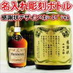

【感謝状・表彰状デザイン】名入れ彫刻ボトル ブランデー ヘネシースペシャル 700ml （感謝状×彫刻ボトル）
名入れ（名前入り）、メッセージ入り、プロのデザイナーが描く似顔絵入りのオリジナルギフト、彫刻ボトルはお酒やジュース、グラスなどのガラスに直接お客様のご希望のメッセージや名前を彫刻して世界で一つだけのオンリーワンギフトにしてお届けします。 既に累計10万本以上を売り上げている実績ある店舗であり、人気の秘密は圧倒的な商品数と彫刻のクオリティにあります。贈る方がいつも飲んでいる愛飲しているお酒や、記念日に飲んだお酒など、特別なメッセージだけではなくお酒の種類も大切ですよね。 またお酒の種類も日本酒、焼酎、泡盛、ウイスキー、ブランデー、梅酒などのリキュールやその他飲料水全般、リーデルなどの高級グラスや今トレンドの耐熱ステンレスコップなどジャンルも豊富に用意しております。名古屋でも屈指の酒販店だからこそラインナップできる商品数と心を込めて製作する彫刻スタッフの技術も兼ね揃え、スタッフと店舗力を合わせてお客様の「特別なギフト」の力にならせていただきます！